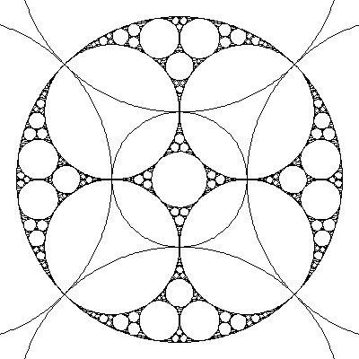
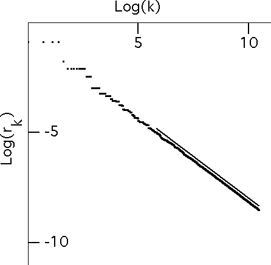

An Apollonian packing is formed by starting with a region in the plane and removing an infinite collection of circles from inside this region, and the sum of the areas of the circles must equal the area of the region.
For example, the limit set of inversion in these five circles C1, ..., C5 is an Apollonian packing.
|  |
| Click the picture to return. |
Suppose we arrange the radii of the removed circles in nonincreasing order:
r1 >= r2 >= r3 >= ... .
If for large enough k we find
rk = k-a
then with some work it can be shown that the box-counting dimension of the limit set is 1/a.
To establish the scaling relation of the radii, we plot Log(k) vs Log(rk).
|  |
For comaprison, we have drawn a straight line of slope -0.752, so the dimension of this fractal is 1.328.
Proving the scaling relation appears to be very difficult, but convincing graphical evidence can be obtained by straightforward programming.
Return to circle inversion fractals.